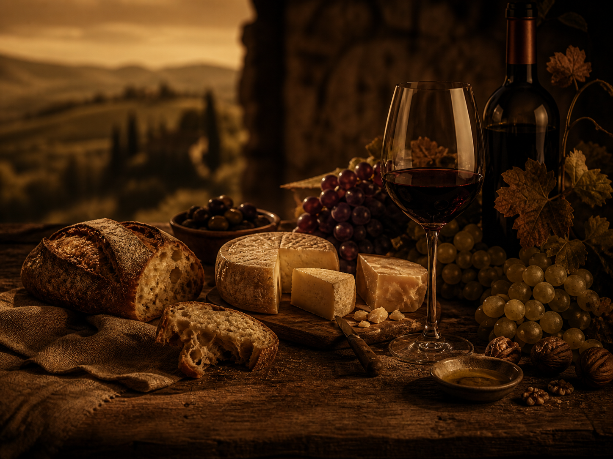
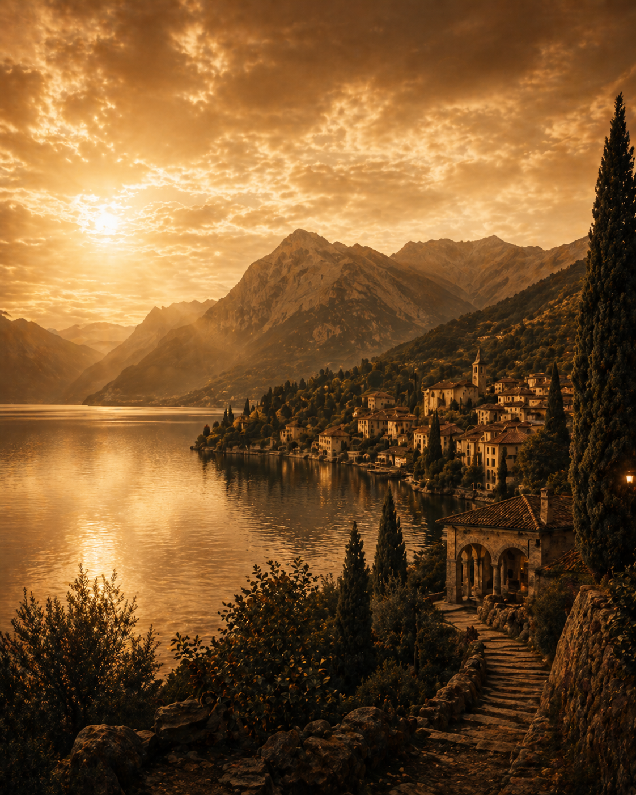

Itinerari
Percorsi pronti da seguire
Itinerari pubblicati

3 ore
Panoramico e culturale
Un percorso morbido tra punti vista, centro storico e una sosta nel borgo.
4 tappeBassa difficoltà

Mezza giornata
Sapori e tradizioni
Prodotti locali, botteghe, scorci e piccole storie.
5 tappeEsperienziale

2 ore
Borgo essenziale
Un itinerario rapido per chi vuole capire l’identità del centro storico.
3 tappeRapido